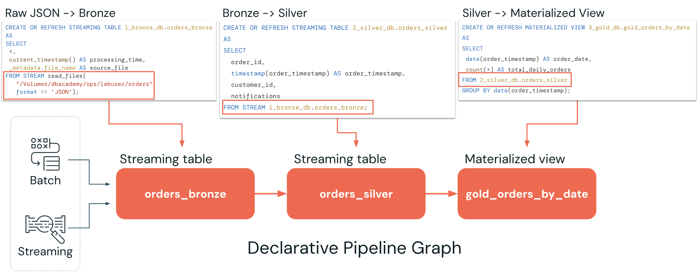

Section 3 · Data Transformation and Modelling · Quelle: Kurs 3, Kapitel 2–3
Klassische ETL-Pipelines lesen bei jedem Lauf alle Dateien eines Verzeichnisses neu ein – das funktioniert für kleine Datenmengen, wird aber mit wachsendem Datenvolumen zunehmend teuer und langsam. Lakeflow Declarative Pipelines (kurz: SDP, ehemals Delta Live Tables/DLT) lösen dieses Problem, indem Entwickler nur noch deklarieren, welche Tabellen aus welchen Quellen entstehen sollen – Databricks kümmert sich automatisch um inkrementelle Verarbeitung, Abhängigkeiten und Orchestrierung im Hintergrund.
Bei einer klassischen (prozeduralen) Pipeline wird jeder Schritt einzeln als CREATE OR REPLACE TABLE formuliert, wobei jede Anweisung bei jedem Lauf die komplette Quelle neu liest und neu berechnet:
-- Klassischer Ansatz: jede Ausfuehrung liest ALLE Dateien neu ein CREATE OR REPLACE TABLE orders_bronze AS SELECT *, current_timestamp() AS processing_time, _metadata.file_name AS source_file FROM read_files(source_volume_path || "/orders", format => "json"); CREATE OR REPLACE TABLE orders_silver AS SELECT order_id, timestamp(order_timestamp) AS order_timestamp, customer_id, notifications FROM orders_bronze;
Dieser Ansatz funktioniert, wird aber mit wachsender Datenmenge zunehmend ineffizient: Kosten und Laufzeit steigen mit jeder zusätzlichen Datei, unabhängig davon, ob diese neu ist oder nicht. Structured Streaming würde inkrementelle Verarbeitung ermöglichen, bringt dafür aber deutlich mehr Komplexität mit sich (Checkpoints, Trigger-Konfiguration, Zustandsverwaltung). Lakeflow Declarative Pipelines schließt genau diese Lücke: Man beschreibt das gewünschte Ergebnis, nicht den prozeduralen Weg dorthin – die Plattform übernimmt inkrementelle Ausführung, Abhängigkeitsauflösung und Automatisierung.
Wer bereits mit Delta Live Tables (DLT) gearbeitet hat, findet die Konzepte hier wieder – nur mit aktualisierter Terminologie. Die Kernsemantik ist unverändert, alte Syntax bleibt aus Kompatibilitätsgründen nutzbar:
| Veraltet (DLT) | Aktuell (Lakeflow Declarative Pipelines) |
|---|---|
CREATE OR REFRESH STREAMING LIVE TABLE | CREATE OR REFRESH STREAMING TABLE |
CREATE OR REFRESH LIVE TABLE | CREATE OR REFRESH MATERIALIZED VIEW |
CREATE LIVE VIEW / CREATE TEMPORARY LIVE VIEW | CREATE VIEW / CREATE TEMPORARY VIEW |
Lakeflow Declarative Pipelines unterscheidet drei Arten von Datensätzen, die jeweils für einen anderen Verarbeitungszweck gedacht sind:
Eine Streaming Table unterstützt inkrementelle Verarbeitung und liest bei jedem Lauf ausschließlich neue Daten ein. Sie eignet sich für die Bronze- und Silver-Schicht, wo kontinuierlich neue Rohdaten eintreffen.
CREATE OR REFRESH STREAMING TABLE orders_bronze AS SELECT * FROM STREAM read_files( source_volume_path || '/orders', format => 'json' );
Entscheidend ist das Schlüsselwort STREAM in der FROM-Klausel: Es sorgt dafür, dass Auto Loader nur die seit dem letzten Lauf neu hinzugekommenen Dateien verarbeitet, statt das gesamte Quellverzeichnis erneut zu lesen.
Eine Materialized View berechnet ihre Ergebnisse so, dass sie stets den aktuellen Stand der zugrunde liegenden Daten widerspiegeln – typischerweise für Aggregationen, Transformationen oder häufig genutzte, vorab berechnete Abfragen in der Gold-Schicht:
CREATE OR REFRESH MATERIALIZED VIEW gold_orders_by_date AS SELECT date(order_timestamp) AS order_date, count(*) AS total_daily_orders FROM orders_silver;
Wichtig: Beim Referenzieren einer Streaming Table innerhalb einer Materialized-View-Definition entfällt das STREAM-Schlüsselwort – die Materialized View verarbeitet grundsätzlich den vollständigen aktuellen Datenbestand der Quelle. Ein kostenbasierter Optimierer entscheidet dabei automatisch, ob ein inkrementelles Refresh oder eine vollständige Neuberechnung günstiger ist.
Views erzeugen keine physisch gespeicherten Daten, sondern rein logische Repräsentationen der zugrunde liegenden SQL-Abfrage. Temporary Views existieren nur für die Dauer eines Pipeline-Laufs, während Views dauerhaft in Unity Catalog registriert werden:
-- Temporaer, nur waehrend des Pipeline-Laufs sichtbar CREATE TEMPORARY VIEW orders_active AS SELECT * FROM orders_silver WHERE notifications = 'Y'; -- Dauerhaft in Unity Catalog registriert CREATE VIEW orders_active_view AS SELECT * FROM orders_silver WHERE notifications = 'Y';
Eine der wichtigsten Eigenschaften deklarativer Pipelines: Die Reihenfolge, in der Datensätze im Code definiert werden, spielt keine Rolle. Databricks erkennt automatisch, welche Tabelle von welcher anderen abhängt (etwa weil orders_silver auf orders_bronze verweist), und verbindet diese Abhängigkeiten im sogenannten Pipeline-Graph. Das erspart manuelles Abhängigkeitsmanagement und macht den Datenfluss auf einen Blick sichtbar.

@materialized_view eingeführt, ergänzend zum bisherigen @table-Dekorator für Streaming Tables.